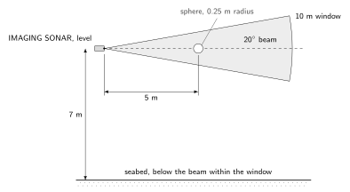
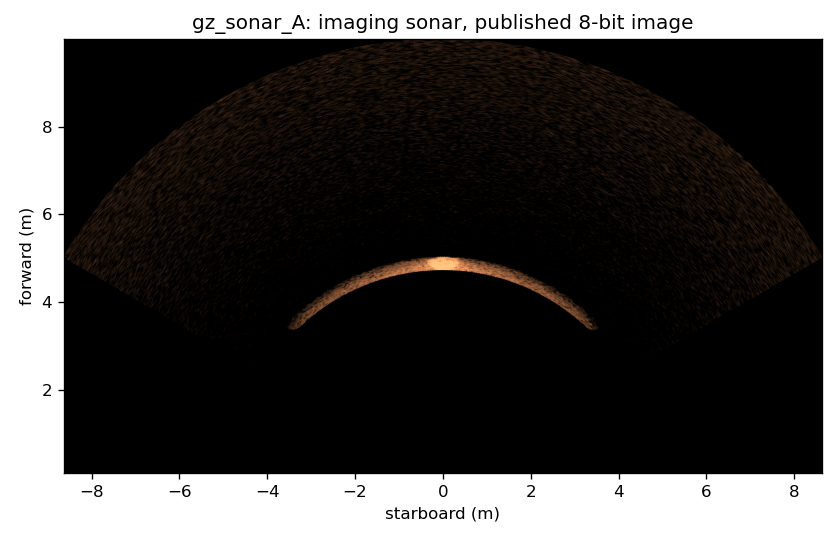
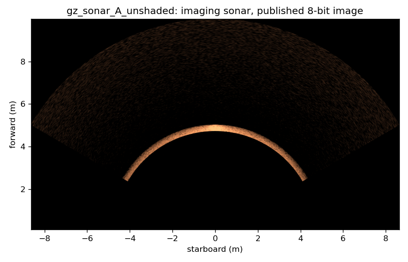
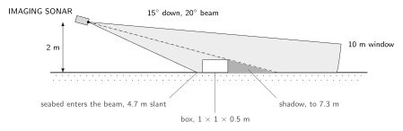
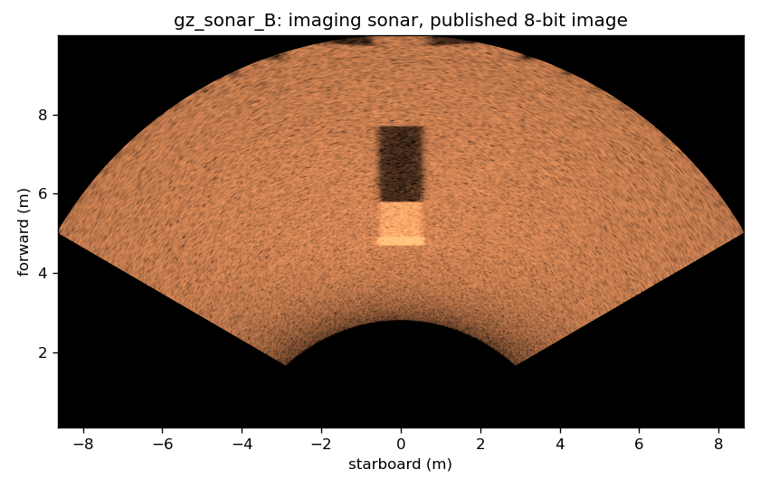
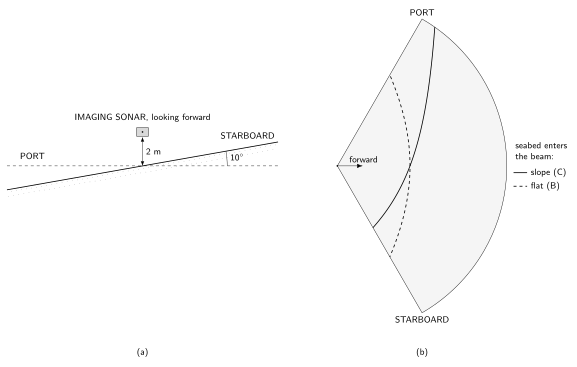
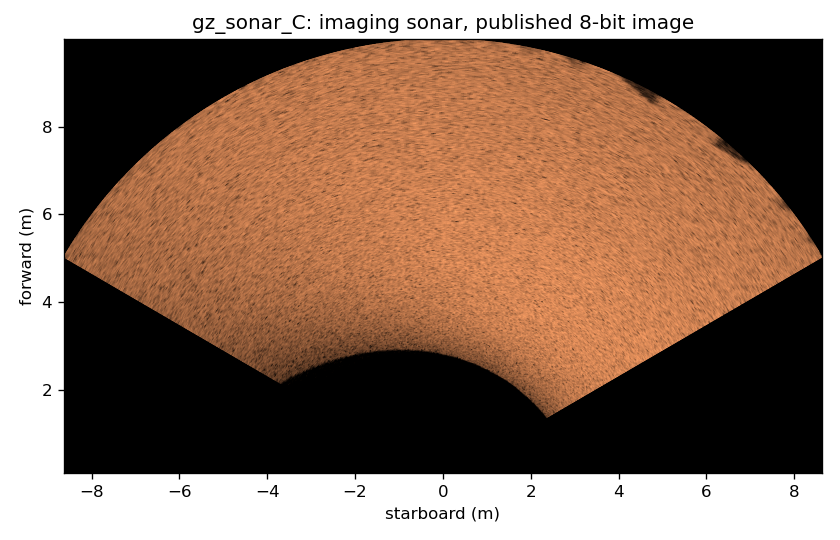
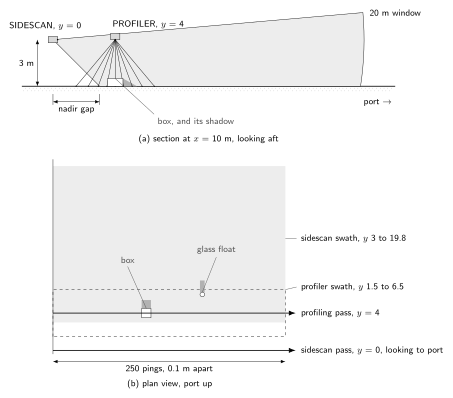
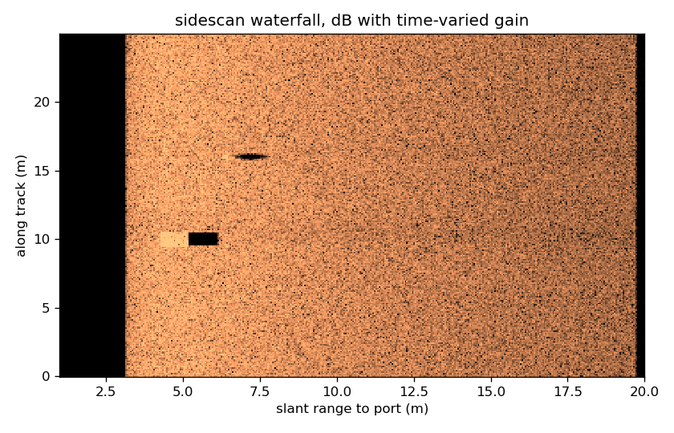
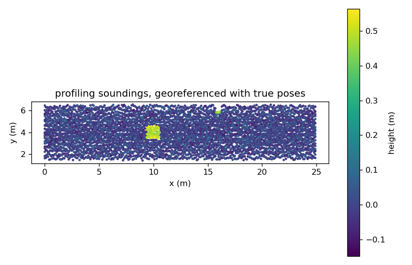

Render a ping without Gazebo
For people working on the sonar engine itself. To use a sonar on a vehicle, start with Imaging (forward-looking) sonar from the ROV.
The sonar engine in gz_sonar runs on its own, so each stage of the model can be seen and tested without a simulation. This page renders an imaging ping, a sidescan pass and a profiling pass on synthetic scenes and draws them. The model itself is described in the sonar simulation design.
In Gazebo, a sonar image is the product of two things:
the scene geometry that gz-rendering’s cameras sample, and
the acoustic model that turns that geometry into echoes.
To avoid the confound, here the geometry is exact: the synthetic scene intersects each ray with its spheres, planes and boxes analytically, so the range, incidence angle and surface of every hit are known, and whatever the image shows is the acoustic model’s doing.
What this tests
Geometry: a target appears at the range and bearing it is placed at, and the seabed’s first return at the altitude the sonar is at.
The sonar equation: echoes fall with range as spreading and absorption predict, scale with a surface’s backscatter (Lambert’s law and the specular glint) and with the area the beam covers, and vanish behind an object (shadows).
The beams: a small target spreads across neighboring beams as the beam pattern says, sidelobes included, and targets at the same range but different elevations fall in the same place (the imaging sonar’s elevation ambiguity).
Speckle and noise: their statistics, and a fixed seed giving the same ping every time, on any number of threads.
What each sonar publishes: the imaging sonar’s 8-bit image, the sidescan’s line in dB with time-varied gain a consumer can take out again, and the profiling sonar’s soundings.
The gtests check these numerically; the pictures are for a person to check by eye, which is still the best check of a sonar image.
Run everything inside drydock, from ~/maritime_ws.
Build and test the engine
colcon build --merge-install --packages-select gz_sonar
colcon test --merge-install --packages-select gz_sonar
colcon test-result --verbose
The gtests are the analytic cases of the design’s testing plan: a sphere at its range and bearing, 40 log R spreading plus absorption, Lambert’s law and the dependence on area, a shadow behind a box, the beam pattern across beams, elevation ambiguity, speckle statistics, the same seed giving the same ping, and what the three sonars publish.
Render and draw
source install/setup.bash
mkdir -p /tmp/sonar
for s in A B C; do ros2 run gz_sonar gz_sonar_render_ping imaging $s /tmp/sonar; done
ros2 run gz_sonar gz_sonar_render_ping sidescan /tmp/sonar
ros2 run gz_sonar gz_sonar_render_ping profiling /tmp/sonar
ros2 run gz_sonar draw_ping.py /tmp/sonar
gz_sonar_render_ping writes NumPy arrays and the axes that go with them; draw_ping.py turns them into PNGs in the same directory. The scenes:
Scene |
What |
Sonar |
|---|---|---|
A |
A sphere, 0.25 m radius, 5 m ahead in open water |
Imaging, the ECHO at 700 kHz with a 10 m window, level |
B |
A 1 × 1 × 0.5 m box on a flat seabed, 5 m ahead |
Imaging, 2 m up, pitched down 15° |
C |
A seabed rising 10° to starboard |
Imaging, 2 m up, pitched down 15° |
Pass |
A box and a glass float on a flat seabed |
Sidescan and profiling, 3 m up, 250 pings 0.1 m apart along a straight track |
What to look for
Each case below shows the scene as a line drawing, with the geometry that predicts what the sonar should see, and then what the engine rendered.
Scene A: a sphere in open water

Scene A, side view. The sphere sits on the beam’s axis, and the seabed, 7 m down, stays below the beam within the 10 m window, so the sphere is the only target.

Scene A. The sphere’s near face, at 4.75 m on the axis, with an arc at the same range on either side of it that dims away from the sphere.
The arc is expected. A sonar forms each beam from an array of transducers, and every beam also hears a little from directions outside its main lobe, through its sidelobes. A strong, isolated target is therefore heard by every beam at its own range, and shows as an arc across the fan, brightest next to the target and fading away from it; real imaging sonars show the same arcs around strong targets in open water. How far the arc reaches depends on the array. Imaging sonars usually shade their arrays, weighting the elements to lower the sidelobes, and the default here is a shaded array (sidelobe_level −25 dB, sidelobe=-25 on gz_sonar_render_ping’s command line), so the arc dims away from the target and is gone about 45° to either side. The sphere is a strong target at the default fixed gain, which is why its arc shows that far. An unshaded array (sidelobe=-13) has sidelobes that fall off slowly and carry the arc across the whole fan:

Scene A with an unshaded array (sidelobe=-13): the same sphere, its arc now across the whole fan.
To render both:
ros2 run gz_sonar gz_sonar_render_ping imaging A /tmp/sonar
ros2 run gz_sonar gz_sonar_render_ping imaging A /tmp/sonar sidelobe=-13 name=unshaded
ros2 run gz_sonar draw_ping.py /tmp/sonar
Scene B: a box on a flat seabed

Scene B, side view. The lower edge of the beam, 25° down, meets the seabed at 4.7 m slant range; the box’s far top edge shadows the seabed out to 7.3 m.

Scene B. The seabed starts where the lowest edge of the 20° beam meets it, the box returns brightly from its near face and top, and the seabed behind it is in shadow. The dimmer band closer in is seabed seen by the vertical beam’s taper, below its −3 dB edge.
Scene C: a seabed rising to starboard

Scene C. (a) Looking forward: the seabed rises 10° to starboard through the point under the sonar. (b) Where the seabed enters the beam: on the axis it is the same as scene B’s flat seabed, closer to starboard, and on the port side it falls away beyond the 10 m window.

Scene C. The seabed’s first return comes closer on the starboard side, where the slope rises toward the sonar, and farther on the port side, where it falls away.
The pass: sidescan and profiling

The pass. (a) A section through the box: the sidescan at y = 0 looks to port, 20° down, leaving a 3 m nadir gap; the profiler at y = 4 runs over the box. (b) The two passes in plan, with the swaths each one covers and the shadows the box and the float cast to the sidescan.

Sidescan. Nothing returns before the seabed (the nadir gap, 3 m at this altitude); the box returns brightly and casts a shadow; the float casts a small one. Automatic gain is smoothed across pings, so the box dims the lines around it only a little.

Profiling. Soundings from the pass, georeferenced with the true poses: the seabed, the box standing half a meter proud, and the float.
Where things live
In the gz_sonar package:
File |
What |
|---|---|
|
Francois–Garrison absorption |
|
Parameters, backscatter, and the ECHO, Omniscan and Surveyor presets |
|
The fan of rays and what each ray hit |
|
The sonar-equation model: hits to intensity per beam and sample |
|
Levels, the 8-bit imaging frame, sidescan lines and profiling soundings |
|
The analytic scene and its ray caster |
|
This page |